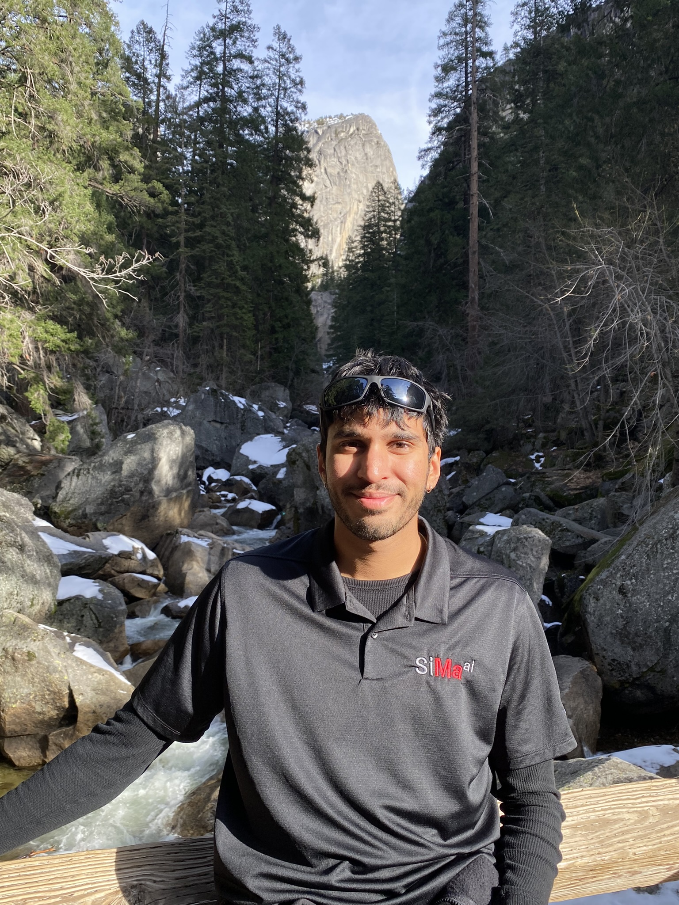

Omkar Lonkar

About Me
I am a third year CSE PhD student at the University of Caliornia, Santa Cruz. My research interests are Computer Architecture, FPGAs, High Performance Computing
, Green Computing, and Graph Algorithms. I am advised by Dr. Abel Souza and Dr. Dustin Richmond.
I did my undergraduate degree in Computer Engineering at UCSB, and my masters at UCSC. In my spare time, I like to rock climb, skateboard, run, hike, and bike.
CV
CV (PDF)
Publications
Teaching Experience
As a teaching assistant at UCSC:
- CSE 120: Computer Architecture (S24, W25, W26)
- CSE 20: Beginner Programming in Python (F25)
Education
- PhD in Computer Science and Engineering, UCSC (Expected 2028)
- MS in Computer Science and Engineering, UCSC 2025. Advisor: Scott Beamer
- BS in Computer Engineering, UCSB 2023
Contact Information
Feel free to contact me using any of the following: